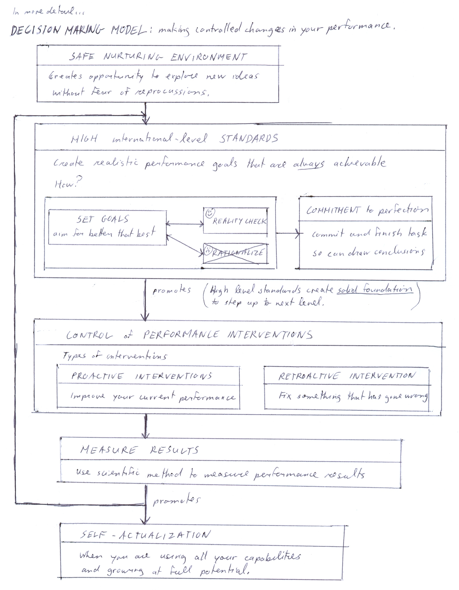

ch1 Summary
POINT FORM SUMMARY
THE BIG PICTURE
S-O-R
All human behavior takes the following form:
You are in a situation
↓
You interpret the situation
↓
You respond, and as a result, change the situation
In psychology we say S →O → R
“S” for stimulus
“O” for organism (person, you)
“R” for response
> [see “s-o-r flowchart”]
ABCE Framework
No matter what perspective in psychology you take, it will fall into this recursive loop, as explained
ABCE framework. So changes in development always take a form of a spiral. As an adult, the spiral may be neutral, or positive towards actualization, or negative towards burnout. Notice that the loop has a strong flow in one direction, so if you make change anywhere in the loop, it will effect all the rest of the elements as well.
- You can improve
- by changing what you think (cognition) and feel (affect)
- thinking: visualization, thinking positive etc.
- feel: control anxiety
- by changing what you do (behavior)
- do skill in more physically aggressive way.
- by changing the environment (environment)
(more examples in “intervention” part of information section)
> [see “ABCE framework”]
Decision Making Model -> for international level results
| Foundation |
- SAFE NURTURING ENVIRONMENT
|
| Process |
- HIGH international level STANDARDS
- CONTROL of PERFORMANCE INTERVENTIONS
- MEASURE RESULTS
|
| End Goal |
|
The steps to actualization are charted out in “
Decision Making Model: making controlled changes in your performance”, figure 1-9.
Figure 1-9. Decision Making Model

Decision making:
deciding where to make changes in ABCE framework.
Once overall safe environment has been created, a more specific environment promoting world class results must be created. I call this
international level STANDARDS. A full
commitment to the
goals that have been set, are key to international standards.
- What are you trying to achieve with these high standards?
- CONTROL. This is achieved with
- · proactive measures (breaking into new ground)
- · retroactive measures (fix things that have gone wrong)
International Standards
STANDARDS
International level standards
Decide what to do (goal) → and then do it (commitment)
- Goal setting: want to break into new ground. How?
- aim for better than best
- increase probability of winning because mathematically have mean at gold.
- prospective
- must have fundamental curiosity to travel into uncharted waters.
- not retrospective: follower, fix things based on prototypical standard.
- reality check
- validity: is the change in performance due to the change you made.
· motivation (not trying hard enough) is eliminated with commitment standard
→ objective comparisons viable
Commitment:
- description:
- 100% perfection, finish 1 task before moving to the next.
- not: hope to get 80% right, do or die, “wishy washy”
- Do it right or not at all. If cannot do → stop → regroup
- Goal setting important: must be realistic so can maintain commitment standard.
Control
CONTROL
Retrospective vs prospective methods:
Retrospective: “in retrospect, what can be done to fix.”
- Assumptions:
- there is something wrong
- know what end product is
- Method: have a list of intervening strategies for each type of situation.
Prospective: “prospecting how to break into new ground.”
- Assumptions:
- there is nothing wrong
- do not know what end product is
- Goals:
- developing control over existing capacities (know why things work so can fix easily by backtracking)
- look for ways to build on existing capacities
- Method:
- task-orientated: do 1 task & finish it, do next task...
> [see chart: “Retrospective versus Prospective Interventions”]
Motivation-Orientated vs Task-orientated methods:
A word about motivation:
- the word “motivation” has the root “motive” which is Latin for “”move”
- motivation = information + caring (Information, of what is to be done. Caring, enough to actually do it, using reinforcements, fears, defenses etc.)
Motivation viewpoint and Task viewpoints are not mutually exclusive:
- Motivation oriented information:
- tends to focus on correlations of caring aspect of motivation.
- Task oriented information:
- tends to focus on information aspect of motivation
- strategies to help you do one task and finish it, do next task and finish it...
- this article focuses on task orientation, because the confounding variable of motivation is eliminated. (i.e. “not trying hard enough” eliminated with commitment standard)
- physiological point of view: essentially task-orientated
Defining What Needs to be Done
General vs specific changes
The type of intervention you want will constantly vary along a continuum. You may want to deal with anxiety, which is quite general/subjective and hard to measure. You may want to change the movement of your arm, which would be specific/objective and easier to measure.
general ___________________________________
specific
↑
constantly moving between general and specific changes.
As the type of changes you make change along the continuum, and as your abilities change, so will the viewpoints from which you look to find solutions. (i.e retrospective, prospective)
Connection among physics, physiology and psychology
Ask yourself the following question in sequence.
- What are the most efficient dynamics for the movements?
- What is the physiology of movements? (i.e. the specific muscle contractions etc. needed to create these movements.)
- What does the nervous system do to make this happen?
- Is there anything I can explicitly think about/experience that can influence the nervous system to do what I want it to do?
In this way a concrete link is created between what you want to do and the psychology behind it.
PHYSICS ←→ PHYSIOLOGY ←→ PSYCHOLOGY
- Physics: dynamics of movements
- Physiology of muscles and nervous system
- Psychology: how thinking and mood influences physiology, which in turn influences physical dynamics.
We do not know the mind-body connection. We do know the correlations between the mind and the body. The Physiological viewpoint is a starting point. In certain situations, a different viewpoint may be more appropriate.
Definition of Task
Have to figure out the physics and the corresponding physiology of the task. The following is a partial list of variables that can be used to define task. Continuum is defined by using dichotomies representing each pole of the continuum. This makes it easy to use scientific methodology to measure progress, as well as helping yourself define what you want to do.
Psychological
- Neurological Physiology
- · how is brain functioning during activity?
- · how is nervous system functioning during activity?
- Concentration
- · focus:
- (direction) internal versus external
(width) narrow versus broad
- · automatic/unconscious/implicit
- versus deliberate/conscious/explicit
- Emotion
- · realistic fears versus no realistic fears
- · major competition pressures
- versus no competition pressures
- · other anxieties versus no other anxieties
|
- Body Physiological
- · gross versus fine muscular movements
- · varying versus repetitive
- · a lot of energy versus little energy (cardio, endurance)
- · a lot of power versus little power (strength)
- Time
- · for performance of whole activity
- · for performance of various parts of the activity
- Environment
- · individual versus team
- · specific Environment factors
|
- Example: Skiing
- Physical - high arousal over a few minute period
- Mental - high concentration, low emotions (except overall positive mood)
SUMMARY OF GOAL SETTING FOR ELITE ATHLETES
We have discussed the following in sequence:
- An overall safe environment to work in.
- A more specific environment which I call “STANDARDS” which promotes world-class results via “CONTROL”.
- CONTROL is achieved with creating solutions RETROSPECTIVELY and PROSPECTIVELY.
- Retrospective problem solving often uses a MOTIVATIONAL-ORIENTED VIEWPOINT, and is used to eliminate things that come in the way of success.
- Prospective problem solving uses a TASK-ORIENTED VIEWPOINT. It is used to improve overall performance. Motivational problems, like not trying hard enough, are eliminated because of the commitment standard once goals are set.
- The PHYSIOLOGICAL VIEWPOINT, which is task-oriented, is a way to link the dynamics of an activity to what are thinking and feeling.
- Use SCIENTIFIC METHODOLOGY to improve accuracy in measuring performance, and hence improve accuracy of goal setting.
Qualifier
These boundaries are fuzzy. There is no such thing as an absolute algorithm to promote change in human behavior. The best anyone can do is make
educated suggestions to increase the probability of success and decrease the probability of failure.
[end of chapter 1 point form summary]
SDCM home